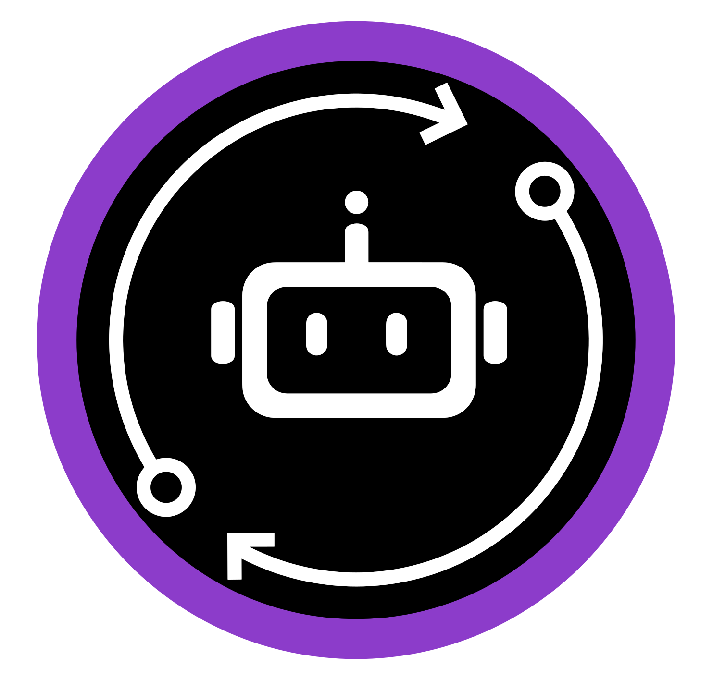

Um portal para cada nota
Alguém da equipe entra em vários portais, empresa por empresa, para baixar XML de NF-e, CT-e e NFS-e. Todo mês, do zero.
Robonotas · para escritórios de contabilidade
O Robonotas usa o certificado A1 de cada cliente para buscar NF-e, CT-e, NFS-e e NFC-e direto na SEFAZ e no Ambiente Nacional, várias vezes ao dia. Sua equipe encontra tudo organizado e ainda ganha apoio na conferência: apontamentos fiscais nos XML, tributos destacados, retenções e IBS/CBS por empresa e período.
O dia a dia do fiscal
Se alguma destas situações parece familiar, o Robonotas foi feito para o seu escritório.
Alguém da equipe entra em vários portais, empresa por empresa, para baixar XML de NF-e, CT-e e NFS-e. Todo mês, do zero.
Aquela nota que ninguém viu aparece justo na hora de fechar e obriga a refazer apuração, lançamentos e conferências.
O A1 do cliente vence, ninguém percebe e a busca de notas para. Quando o problema aparece, o mês já está atrasado.
Pedir XML ao cliente, conferir se chegou tudo, renomear, organizar pastas... trabalho repetitivo que toma o tempo de quem deveria analisar.
Como funciona
Informe o CNPJ e envie o certificado A1 pelo próprio painel. Nada de mandar certificado por e-mail.
Várias vezes ao dia, o Robonotas consulta a SEFAZ e o Ambiente Nacional, respeitando os limites de consulta para evitar bloqueio.
XML, PDF e eventos (cancelamentos, cartas de correção) ficam vinculados a cada nota, por empresa, tipo e entrada/saída.
Baixe o ZIP do mês com XML, PDF e planilhas, ou abra o analytics da empresa: totais, tributos, retenções e os apontamentos da conferência fiscal antes de fechar.
Funcionalidades
Precisa incluir notas de saída que vêm do ERP? Importe XML ou ZIP pelo painel. O Robonotas valida assinatura e protocolo.
DANFE da NF-e, DANFE NFC-e (80 mm), DACTE e DANFSe gerados a partir do XML, sem depender de outro sistema.
O robô volta a consultar ao longo do dia e respeita os limites da SEFAZ, para a empresa não ser bloqueada por excesso de consultas.
Alerta por e-mail 60 e 30 dias antes do vencimento do A1, com link para enviar o certificado renovado pelo painel.
Veja cada consulta feita e o retorno recebido. Quando algo não chegar, você sabe o porquê sem abrir chamado.
Download individual de XML e PDF, listas em CSV/XLSX e o ZIP mensal por empresa, organizado por tipo e entrada/saída.
Para quem quer automatizar: chave por cliente criada e revogada no painel, documentação e filtro “alterados desde” para buscar só o que mudou. O bloco de tributos já traz as retenções e o IBS/CBS. 100% compatível via API com os demais robôs da Robolabs.
Vários usuários na contabilidade, e cada um com a sua própria lista de empresas. Você define quem pode cadastrar empresas e certificados e quem só pode consultar e baixar notas.
Selo “Ret.” nas listas de notas, colunas de retenção e de IBS/CBS na planilha do ZIP e no bloco de tributos da API, e IBS/CBS também no DACTE. Veja como funciona.
Um arquivo por empresa e por mês, com os XML, os PDFs (opcional), a planilha de lançamentos em XLSX e o resumo do mês. Eventos podem entrar também. A NFS-e entra pela competência; os demais documentos, pela data de emissão.
📦 ZIP do mês · 09/2026
├── NFe/
│ ├── Entrada/ XML · PDF · XLSX
│ └── Saida/ XML · PDF · XLSX
├── NFCe/
│ └── Saida/ XML · PDF · XLSX
├── CTe/
│ └── Entrada/ XML · PDF · XLSX
├── NFSe/
│ ├── Entrada/ XML · PDF · XLSX
│ └── Saida/ XML · PDF · XLSX
├── Resumo_202609.xlsx
└── LEIA-ME.txt
Analytics por empresa
Os XML já estão lá, então o Robonotas transforma tudo em números para o contador. Filtre por empresa, por período (mês, trimestre, ano ou intervalo) e por entrada/saída. A natureza de cada nota é identificada pelo CFOP e pela finalidade da nota.
Novo no Analytics · Conferência fiscal
A Conferência fiscal é uma aba do Analytics. Por empresa e período, ela lê os XML de entrada e de saída e aponta o que merece um segundo olhar. São 10 verificações em 6 temas.
Apoio à conferência, não substitui a revisão do contador. A Conferência fiscal usa regras gerais e não considera regimes especiais nem benefícios por UF. Ela aponta o que vale conferir; a análise e a decisão continuam com o seu escritório.
Retenções e IBS/CBS
O quadro “IBS e CBS por mês” mostra o IBS UF, o IBS Municipal e a CBS destacados nas notas, de saídas e entradas. As colunas de retenção e de IBS/CBS também entram na planilha do ZIP e no bloco de tributos da API, e o IBS/CBS aparece no DACTE.
Segurança e controle
O certificado fica guardado no servidor próprio da Robolabs, com acesso restrito, e não passa por e-mail nem por terceiros.
O Robonotas roda em servidor próprio da Robolabs, não em nuvem de terceiros, e é publicado com segurança pelo Cloudflare.
Acesso ao painel web com login por e-mail, protegido pelo Cloudflare Access.
Cada colaborador tem a sua própria lista de empresas e só enxerga essas. E você define quem pode cadastrar empresas e certificados e quem só pode consultar e baixar notas.
Cada ação fica registrada com o e-mail de quem fez. Sem “alguém mexeu aqui”.
Quem usa a Robolabs
“Empresa presta um excelente serviço, sempre em busca de novas soluções e preocupada com o cliente. A ferramenta de importação das notas fiscais, tem nos ajudado muito, e não sendo mais necessário que cada colaborador realize esse processo, diminuindo o tempo do fechamento fiscal.”
“Com a Robolabs tivemos a oportunidade de redefinir nossa rotina de trabalho no Escritório! Encontrar uma demanda de trabalho pronta, correta, do jeito que queremos, e em questão de horas ou de um dia para o outro (o que antes levava dias para terminar) parece um sonho!”
“Os sistemas prometiam muita coisa, mas, na prática não cumpriam o que prometiam, faziam parcialmente o que eu gostaria. Na contabilidade há muito trabalho repetitivo... Conversamos com vocês e vocês conseguiram criar as robotizações do jeito que gostaríamos.”

Feita por quem conhece a rotina contábil. Os fundadores da Robolabs vieram de escritório contábil. A empresa nasceu no Parque de Inovação Tecnológica de São José dos Campos, passou pelos programas Nexus Lab, Nexus Growth Digital (graduada em dezembro de 2023) e Nexus ScaleUp, e foi acelerada pelo Sebrae for Startups em 2024.
Preços
Cobrança mensal por empresa monitorada, sem limite de notas. Quanto mais CNPJs, menor o preço das faixas seguintes.
Faixas progressivas: cada faixa tem o seu preço. Exemplo: 120 CNPJs = 50 × R$ 5,00 + 70 × R$ 4,00 = R$ 530,00/mês. Mensalidade mínima de R$ 99,00. 10% de desconto no plano anual pago à vista.
Dúvidas frequentes
NF-e (modelo 55) recebidas pela empresa; CT-e (57) e CT-e OS (67) em que a empresa participa, por exemplo como tomadora; NFS-e do padrão nacional, emitidas e tomadas; NFC-e (65) emitidas por empresas de São Paulo; e os eventos dessas notas, como cancelamentos e cartas de correção.
Não. A NFS-e é captada pelo Ambiente de Dados Nacional, então funciona apenas para municípios que usam o padrão nacional da NFS-e. Notas de municípios com sistema próprio não chegam por esse caminho.
As NF-e de saída não são captadas automaticamente. Você pode importar o XML ou um ZIP vindo do ERP do cliente pelo painel. O Robonotas valida assinatura e protocolo e organiza junto com as demais notas, inclusive no ZIP do mês e no analytics.
Às vezes a SEFAZ entrega primeiro apenas o resumo da nota. O Robonotas troca esse resumo pelo XML completo assim que ele fica disponível, e o analytics mostra quantas notas ainda estão só com resumo.
O certificado digital A1 de cada empresa, enviado pelo próprio painel. O Robonotas avisa por e-mail 60 e 30 dias antes do vencimento, com link para enviar o certificado renovado.
O robô consulta várias vezes ao dia, mas respeita os limites de consulta da SEFAZ justamente para evitar bloqueio. E no painel de consultas você vê cada consulta feita e o retorno recebido.
São 10 verificações em 6 temas, nos XML de entrada e saída da empresa no período: ICMS-ST (ST destacado com CFOP que não é de ST, e CFOP de ST sem ICMS-ST); CFOP x UF (CFOP incompatível com a UF ou com o destino); alíquota e DIFAL (alíquota interestadual fora do padrão, venda interestadual a não contribuinte sem DIFAL e compra interestadual de uso e consumo ou ativo); revenda x uso e consumo (compra que parece de uso e consumo ou ativo, sem apontar quando a empresa também vende o item); NCM ausente ou inválido; e cancelamentos e duplicidades (cancelamento fora do prazo ou em outro mês, e possíveis notas duplicadas). Cada apontamento vem como “erro provável”, “verificar” ou “sugestão”, e dá para exportar CSV por análise ou XLSX com todas.
Não. Ela é um apoio à conferência: usa regras gerais e não considera regimes especiais nem benefícios por UF. Por isso pode apontar algo que, no caso daquela empresa, está correto, e não garante que todo erro será encontrado. Quando um apontamento não se aplica, você pode dispensá-lo informando o motivo; fica registrado quem dispensou, e a opção “mostrar dispensados” traz de volta o que foi dispensado.
Sim, os valores de IBS e CBS destacados nas notas. O Analytics tem o quadro “IBS e CBS por mês”, com IBS UF, IBS Municipal e CBS. As colunas de IBS/CBS também entram na planilha do ZIP e no bloco de tributos da API, e o IBS/CBS aparece no DACTE.
Nas listas de NF-e, NFS-e, CT-e e Documentos, as notas com retenção ganham o selo “Ret.”. Ao passar o mouse, você vê cada imposto retido com base, percentual e valor: ISS retido, IRRF, INSS/CP, PIS, COFINS, CSLL, PIS/COFINS/CSLL somados na NFS-e nacional e ICMS-ST retido no CT-e. Há também o filtro “Com retenção” nas listas e o quadro “Tributos retidos” no Analytics, de saídas e entradas.
A integração é feita pelos arquivos: o ZIP mensal com XML, PDF e planilhas, o download de XML/PDF e as listas em CSV/XLSX, que o seu sistema já sabe importar. Para quem quer automatizar, há uma API REST somente leitura com chave por cliente, e o Robonotas é 100% compatível via API com os demais robôs da Robolabs.
No servidor próprio da Robolabs, não em nuvem de terceiros, publicado com segurança pelo Cloudflare. O certificado fica guardado nesse servidor, com acesso restrito, e não passa por e-mail nem por terceiros.
Sim. A contabilidade pode ter vários usuários, e cada colaborador pode ter a sua própria lista de empresas. Você também define quem pode cadastrar empresas e enviar certificados e quem só pode consultar e baixar notas. Tudo fica registrado na auditoria com o e-mail de quem fez.
Mensal, por CNPJ monitorado, sem limite de notas, em faixas progressivas: até 50 CNPJs R$ 5,00 cada; de 51 a 200, R$ 4,00; de 201 a 500, R$ 3,00; acima de 500, sob consulta. A mensalidade mínima é R$ 99,00 e o plano anual pago à vista tem 10% de desconto.
Sim, um valor fixo de R$ 347,00, cobrado uma única vez.
Não há fidelidade. Para cancelar, basta avisar com 30 dias de antecedência.
Pelo WhatsApp (12) 3950-0730 ou pelo e-mail suporte@robolabs.digital.
É ao vivo, com uma contabilidade de teste: você vê o painel, os documentos, o analytics, a conferência fiscal e o ZIP do mês funcionando de verdade, e tira suas dúvidas com a nossa equipe.
Agende uma demonstração ao vivo. Em poucos minutos você vê como os XML chegam sozinhos, o que a conferência fiscal aponta e como fica o fechamento do mês.